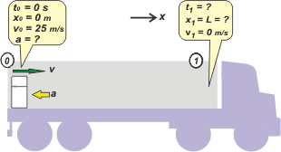

NO ME SALEN
PROBLEMAS RESUELTOS DE FÍSICA DEL CBC
(Leyes de conservación, energía mecánica)
|
|

|

|
Adicional 33-. Un camión que va a 90 km/h transporta
una heladera de 87 kg que esta ubicada junto a
la puerta trasera del vehículo. El coeficiente de
rozamiento entre la heladera y el piso del camión
es de 0,4. De pronto el camión frena bruscamente. ¿Cuál debería ser, como mínimo, la longitud
del compartimiento de carga del camión a fin de
que la heladera no choque contra la pared delantera?
Nota: Resolver este problema por consideraciones
dinámicas y también por consideraciones
energéticas.
|
Este ejercicio es idéntico a uno que ya hiciste y que cuando leiste el enunciado no te trajo ningún trauma... era el e1.08. Si querés andá a verlo y nos volvemos a encontrar. Reconozco que en este nuevo contexto, en esta nueva situación, no es tan sencillo reconocer el problema. Pero lo intentaremos.
Un camión que frena abruptamente... la verdad... no existe. Se aproximaría bastante a eso un camión que choque de frente contra un muro de concreto de una masa cientos de veces más grande que el camión, que además no debe deformarse. En fin... te das cuenta que es bastante difícil. Al final del ejercicio te voy a proponer repensarlo en algunas situaciones más realistas. La cuestión es que el autor del ejercicio lo que nos está proponiendo es que asumas que el camión adquiere de golpe una velocidad igual a cero, queda detenido igual que el pavimento... de modo que la heladera -que está animada de una velocidad igual a la que traía el camión, o sea 90 km/h- comienza a deslizar sobre el piso del camión... exactamente de la misma manera en que lo haría en cualquier otro piso (que tenga el mismo coeficiente de rozamiento con la heladera). |
|
|
|  |
Arranquemos con la dinámica, eso me va a permitir encontrar una expresión para la aceleración en función de los datos del problema. Vos imaginate el DCL.
— Roz = m a
N — P = 0
Roz = μ . N
|
| Una heladera suelta viajando a 90 km/h... pongamos un camión bien largo, yo sé lo que te digo. |
|
|
|
Si combinamos las tres ecuaciones tenemos, A ver... vamos haciéndolo juntos...
N = P = m g
Roz = μ . m g
— m a = μ . m g
a = — μ . g
Ahora podemos ir a la cinemática del asunto y ver si encontramos una expresión para la longitud mínima del camión... que acá llamé x1. ¿Cómo era esa cuestión de la cinemática? Se trata de un MRUV, así que volvemos a buscar los modelos de ese movimiento y reemplazamos las constantes del modelo por las constantes del movimiento, que están todas juntitas en el esquema, en el punto 0.
x = v0 . t — ½ μ . g t2
v = v0 — μ . g . t
Ahora le pedimos a estas ecuaciones que hablen del punto 1:
L = v0 . t1 — ½ μ . g . t12
0 m/s = v0 — μ . g . t1
y lógicamente desembocamos en un sistema de dos ecuaciones y dos incógnitas. Acá viene el álgebra. De la segunda despejo t1:
t1 = v0 / μ . g
y esto lo meto en la primera:
L = v0² / μ . g — ½ v0² / μ . g
L = ½ v0² / μ . g
No tengo que explicarte que 90 km/h es lo mismo que 25 m/s.
L = ½ (25 m/s)² / 0,4 . 10 m/s²
|
|
|
| |
L = 78,125 m |
(fue un parto, pero todavía falta) |
|
|
|
Sacarlo por consideraciones energéticas es más sencillo. La energía cinética que tiene la heladera en el fondo del camión se la come el trabajo de la fuerza de rozamiento a lo largo de la caja.
Wroz = ΔEc
Wroz = Ec1 — EcO
Roz . L . cos 180º = — EcO
— μ . m . g . L = — ½ . m . v1²
μ . g . L = ½ . v1²
Y como ves, llegamos al mismo resultado que antes. Y la heladera, por suerte, se frena justito antes de chocar contra la pared delantera de la caja del camión. |
|
|
 |
|
|
| Cualquier camionero sabe que no tiene que dejar cargas sueltas en la caja. Pero nunca falta alguno que cae en el engaño: cree que el agarre con el piso debido al rozamiento es proporcional a la masa de la carga, y que entonces no es necesario amarrarla. |
|
|
|
Como se ve en este ejercicio, la distancia de frenado no depende de la masa de la carga, que por inercia, pretende continuar el viaje sin importarle la voluntad del conductor.
A veces los camioneros tampoco parecen entender que si viajan a
90 km/h, por excelentes que sean sus frenos, necesitan una distancia de frenado de unos 80 metros, más o menos, para detenerse. |
|
|
|
|
|
 |
| DESAFIO: Suponiendo que el camión choca de frente con una montaña, ¿cuándo deberían soportar los amarres de esta heladera de 87 kg? Ahora el más difícil: si la caja del camión tuviera 10 metros de largo, y la heladera viajase suelta... ¿cuál sería la máxima aceleración de frenado que podría aplicar el camionero para que la heladera llegue sanita? |
|
| Algunos derechos reservados.
Se prohibe terminantemente imprimir en blanco y negro y sin citar al autor que sigue tomando mate. Última actualización may-08. Buenos Aires, Argentina. |
|
|
|